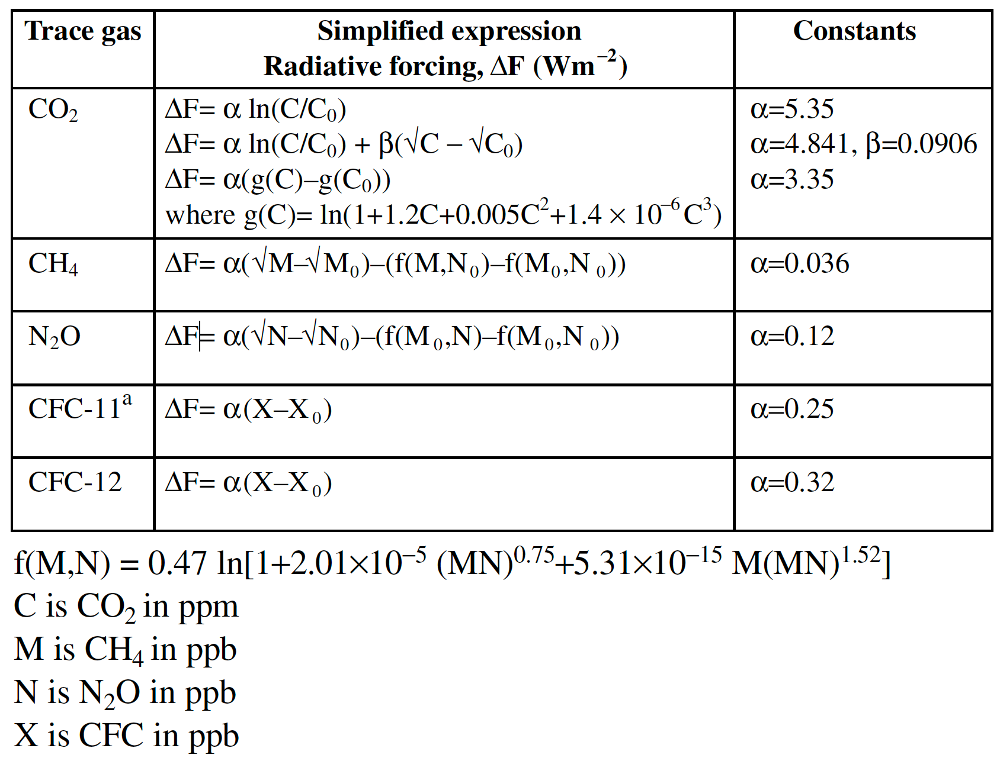
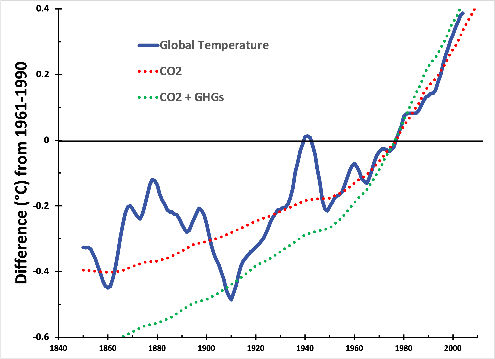
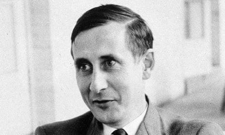

This installment reveals a different sort of blind spot. Continuing with the visual analogy, I think I’ve discovered more of a fuzzy area, not just for me but perhaps for the scientific community.
It is a segue from the last installment1. In a very early installment (#2), I asked whether the vilification of “carbon” was justified, as portrayed in the broad vocabulary of ‘decarbonization’. As a chemist, making a naturally occurring chemical element an object of scorn is silly—especially because the element is nearly 20% of the human body by weight. If biology were ‘decarbonized’, it’d be uniformly lethal! If gemology were ‘decarbonized’, we’d have no diamonds! Etc. Etc.
I compared two sets of data derived from IPCC reports in that installment. One set reported measurements of composite global temperature. The other set reported historical carbon dioxide concentrations converted to a “climate forcing” number (∆F, covered in the same issue) that could predict temperature changes due to changes in the atmosphere. Here it is again:

This chart reveals an impressive match between theory and prediction, so close that it’s bothered me for more than a year. The calculation only considers the contribution of CO2 gas, not the holistic ‘CO2e’ of all “greenhouse gases” (see the previous issue for why this is significant). Nevertheless, I concluded (I believe correctly) that carbon dioxide is the main culprit in global warming—the optical illusion, this time, is that it may be the only culprit.
Since writing that installment, I’ve wondered, “Did modelers calculate forcing from first principles, or did they adjust the model until the temperature matched the CO2 concentrations?” So I went back to look at where the mathematical relationship came from. Apologies for the math, but it helps to sharpen an argument when it can be made quantitatively.
Here are the specific equations. I used the simplest CO2 ones:
T =λ∆F [Global average temperature based on the change in radiative forcing of the atmosphere, ∆F, in W/m2 and λ is 0.5]
∆F = 5.35ln(CO2/CO2o)2

It turns out that the equation is derived from a curve fit to a three-dimensional model of the atmosphere reported by Gunnar Myhre, the lead author of the critical IPCC section3. The paper it is derived from4 considers the atmosphere’s modeled chemical properties from first principles. So, we can directly examine whether a model that includes all gases is more consistent with the data. Here’s what is seen when forcing by the GHGs methane and nitrous oxide (not just CO2) is taken into account:

This difference makes sense to me. If the ‘CO2 alone’ measurement fits the observations closely, then any additional ‘forcing’ coming from other gases can only make the predicted temperature curve (associated with industrialization) steeper. Because it’s a spreadsheet model, I examined what would have to be true for the green curve to match the data more closely. If the forcing associated with CO2 is reduced, specifically changing ⍺ from 5.35 to 2.4, or if the temperature change associated with ‘forcing’ was reduced, specifically changing λ from 0.5 to 0.3 (the latter being a less likely explanation), then the curve fits better (but still imperfectly). Unfortunately, neither is consistent with the literature—Myhre’s original manuscript states that the error limit of ⍺ is ±1% (so a range of roughly 5.3 to 5.4).
Explaining this discrepancy requires more information than I can assemble in a short period of time, but there are two limiting possibilities, both of which indicate that the models used in the IPCC report are incorrect. First, if the formula relating climate forcing to global average temperature changes is correct, then forcing by methane (CH4) and nitrous oxide (N2O) is not a factor in warming, rendering large portions of the report (and a lot of the recent scientific literature) pointless. On the other hand, if the formula is wrong, there has to be a thorough explanation: What assumptions in the atmospheric model are the equations based on, and how did they fail? [Formally, it is also possible that measurements of gases other than CO2 before 1970 are inaccurate, but that runs counter to the foundation of Science upon Data5.]
To be frank, I don’t think it matters from a scientific perspective. There is a fundamental tenet of scientific thought, Occam’s Razor. As applied to science, this tenet translates to:
When two competing theories make the same predictions, the simpler one is the most correct.
With all the data available today, this is a hard tenet for scientists with unprecedented computational power to heed. There is a natural compulsion to add complexity (and, by inference, the patina of academic rigor) to any model, a compulsion that peer review exacerbates.
Instead of examining each possible parameter for significance, let us consider a more computationally-related and contemporary anecdote told by the prominent physicist, the late Freeman Dyson. In a retrospective essay published nearly two decades ago, he related a conversation early in his career with the legendary Enrico Fermi (see this issue6), who, in turn, quoted computer pioneer John von Neumann. Dyson wrote:

I was a young professor of theoretical physics at Cornell University, responsible for directing the research of a small army of graduate students and postdocs…[In a complicated physics calculation, w]e joyfully observed that our calculated numbers agreed pretty well with Fermi's measured numbers. So I made an appointment to meet with Fermi and show him our results. Proudly, I rode the Greyhound bus from Ithaca to Chicago with a package of our theoretical graphs to show to Fermi.
…
“There are two ways of doing calculations in theoretical physics”, [Fermi] said. “One way, and this is the way I prefer, is to have a clear physical picture of the process that you are calculating. The other way is to have a precise and self-consistent mathematical formalism. You have neither.”
…
In desperation I asked Fermi whether he was not impressed by the agreement between our calculated numbers and his measured numbers. He replied, “How many arbitrary parameters did you use for your calculations?” I thought for a moment about our cut-off procedures and said, “Four.” He said, “I remember my friend [computer pioneer] Johnny von Neumann used to say, with four parameters I can fit an elephant, and with five I can make him wiggle his trunk.” With that, the conversation was over. I thanked Fermi for his time and trouble, and sadly took the next bus back to Ithaca to tell the bad news to the students.
—Dyson, F. A Meeting with Enrico Fermi. Nature 427, 297 (2004). https://doi.org/10.1038/427297a
Right now, the simple model of forcing caused by carbon dioxide, with a single variable (the CO2 concentration in ppm), thoroughly and accurately explains the increased temperature. Sure, the model can be made much more complicated, variables can be added, and eventually, the elephant will wiggle its trunk. So the question for you, dear reader, is, “Which explanation do you believe?”
As always, you’re welcome to draw your own conclusions! But my take is, “Since the CO2 (only) curve fits the data, the Occam’s Razor explanation is that global warming is caused by increasing carbon dioxide levels alone. No other GHGs need to be included because that complicates a problem that is already fully defined.” Scientists seeking solutions should avoid including additional factors unless they’re demonstrably impactful (with better data and after the CO2 problem has been solved).
Besides, including these other gases gives politicians too easy an out. COP26 resulted in a “methane pledge” by 100+ countries, including the U. S. and China. A remarkable-ish agreement still falls well short of the 1987 Montreal Protocol CFC agreement (of all 198 member states). Ask yourself, “Was it constructive?” Also, consider that Taiwan, even though its economy is 21st in the world, isn’t part of the UN, so the Montreal agreement doesn’t formally bind it. Geopolitics.
Thank you for reading Healing the Earth with Technology. This post is public so feel free to share it.
This equation is comforting to the chemist in me because it is in the general form of the Gibbs Free Energy equation taught in undergraduate classes.
Myhre, G., D. Shindell, F.-M. Bréon, W. Collins, J. Fuglestvedt, J. Huang, D. Koch, J.-F. Lamarque, D. Lee, B. Mendoza, T. Nakajima, A. Robock, G. Stephens, T. Takemura and H. Zhang, 2013: Anthropogenic and Natural Radiative Forcing. Chapter 8 of Climate Change 2013: The Physical Science Basis. Contribution of Working Group I to the Fifth Assessment Report of the Intergovernmental Panel on Climate Change [Stocker, T.F., D. Qin, G.-K. Plattner, M. Tignor, S.K. Allen, J. Boschung, A. Nauels, Y. Xia, V. Bex and P.M. Midgley (eds.)]. Cambridge University Press, Cambridge, United Kingdom and New York, NY, USA.
Myhre, G. et al., “New estimates of radiative forcing due to well-mixed greenhouse gases” Geophys. Res. Lett. 25(14) pp 2715-2718 (1998)